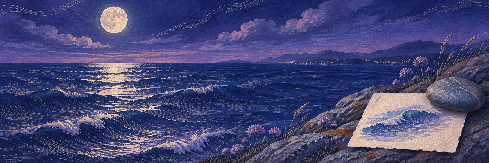

和小林的约定
小林约我周六一起画海边明信片。次日，我们把日子改成了周日。
后来改过周六周日
这件事已经约好。去看潮间带还只是我的一个念头。
合成故事 · 设计预览
十一月 · 周五夜里
小林发来的海浪视频里，礁石在退潮时露出了水面。我想多看看那些小水洼。

和小林的约定
小林约我周六一起画海边明信片。次日，我们把日子改成了周日。
这件事已经约好。去看潮间带还只是我的一个念头。
合成故事 · 设计预览
一段对话 · 4 个可回看的片段
选择圆点，看看每一段话来自哪里。